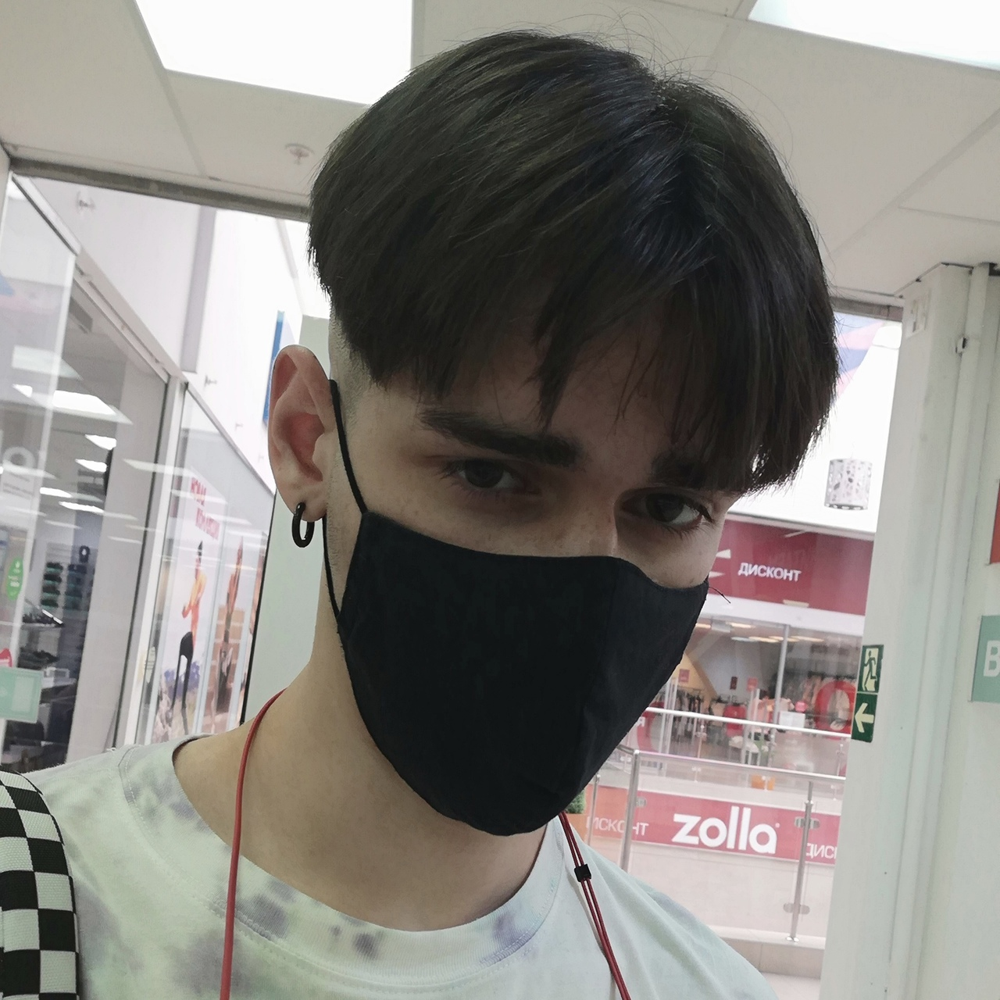

Balalykin Maxim
IS group 9

Student of VSU: Faculty of Computer Science.
Direction of study: information security, group 9.2.
Graduated from V.A. Kotelnikov Gymnasium No. 64 in Lipetsk, with a gold medal and a red diploma.
The holder of the CAE diploma of English proficiency level C1 (advanced) (received in 2021).
Hobbies: computer games, music, video editing, radio engineering, cooking, fashion.
Musician multi-instrumentalist in the genres of rock and heavy metal; electric guitar, bass guitar.
Active participant in the promotion and development of the fighting games community in the CIS.
Tournament player in the Tekken 7 and Tekken 8 disciplines.
Engaged in part-time game broadcasts on the platform twitch.tv .